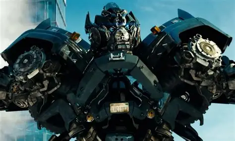

Ironhide

Backstory
Ironhide is one of the Autobots' oldest and most experienced warriors. He serves as Optimus Prime's trusted security specialist and is known for his bravery and loyalty in battle.
Weapons
- Twin Heavy Cannons
- Rocket Launchers
- Energy Blasters
- Combat Armor